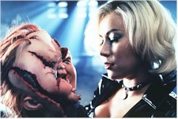
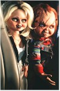
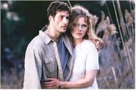

Contents | Features | Reviews | News | Archives | Store |
 |
|
| Movie Credits | Buy It! |
Bride of Chucky
Review by Elias Savada
Posted 16 October 1998
| Directed by Ronny Yu. Starring
Brad Dourif, Jennifer Tilly, Written by Don Mancini. |
Hong Kong action director Ronny Yu (The Bride with White Hair, Warriors of Virtue) highsteps over the earlier efforts by Tom Holland, John Lafia, and Jack Bender, providing an easy pace and effective jugular scares, although we, the audience, are totally aware of Chucky’s shenanigans and it’s a matter of see and wait for the rest of the cast to clue in to the situation. That is, except for Tiffany (an inspired Jennifer Tilly), a white-trash platinum blonde whose push-up bra showcases two popping-fresh reasons, one adorned with a charming heart tattoo, for guys to see this film. She makes great Swedish meatballs, too! After some plastic surgery with a staple gun on her boyfriend ("Well, hello dolly!") and some restorative gestures courtesy of the scholarly volume Voodoo for Dummies, the heartless brute gives his ex the cold shoulder. She gives him some payback with a Barbiesque bride before the scar-faced spoil-sport gives his tormentor some shocking news as she sips champagne in a relaxing bubble bath, a colored flotilla of foam providing a garish death wreath. Too late, the tiny terror realizes he needs a cohort to transfer his imprisoned human soul back into his earthly body (belonging to serial killer Charles Lee Ray), which lies buried in a Hackensack, New Jersey, cemetery. Thus the queen of suds gets downsized for the rest of the film, her re-awakening accompanied with scenes from the 1930s Universal (of course) horror classic Bride of Frankenstein.
Along for part of the road movie is John Ritter, the former star two decades ago of TV’s Three’s Company, hamming it up as Chief Warren Kinkaid, a small town sheriff with an over-protective and mean-spirited attitude. He loves playing warden to his rebellious niece, Jade (Katherine Heigl, who effectively played Steve Seagal’s niece in Under Siege 2; Dark Territory) as she sneaks off for a secret rendezvous with her love hunk, Jesse (Sunset Beach’s Nick Stabile in his feature film debut). Chucky nails the officer before you can say Clive Barker, and shows the nasty lawman why he’s a such a big fan of the Hellraiser films. Meanwhile the young lovers, innocent fugitives suspected in the numerous murders Chucky and his bride leave in their wake, elope with the dolls in tow, unaware of some of the other cargo hidden away in their van.
A brief stop in Niagara Falls provides the filmmakers a pyrotechnical tour-de-force as some nasty thieves get a mirror-shattering shower courtesy of our pint-size Barbie and Clyde. Chucky, in a sentimental moment, retrieves a wedding ring for his bride from among the newly-deceased honeymoon couple’s dismembered body parts.
As our foursome heads south, Kathy Najimy pops up in a small cameo as a cleaning woman who discovers a few over-ripe bodies, while the much-too-innocent Jade and Jesse take too many turns accusing each other of the dastardly deeds. Etc., etc., etc.
Brad Dourif, the only actor to have "appeared" in all four Chucky films, reprises his role as the voice of the vertically-challenged demonic star. His intonations are chilling and mesh perfectly with the electro-mechanical doll constructed and operated by puppet-meister Kevin Yagher.
Don Mancini, creator and sole screenwriter for all four Chucky features has fondly fashioned a black comedy with some darkly funny sequences and witty lines. I particularly liked the moment Chucky is trying to explain his nearly incomprehensible origins and he comments that "if this was a movie, it would take two or three sequels to explain." The Cabbage Patch Kids may have run their course, but Chucky’s back in town.
As a final postscript, according to Lew Irwin’s Studio Briefing, Universal Studios indicated its Hollywood and Florida theme parks will "likely" be featuring major attractions based on Bride of Chucky and its forthcoming Psycho remake and computer-generated Frankenstein project. Honestly, I can’t fathom Chucky’s R-rated appeal among the younger set, although one of the film’s taglines is "This time, Chucky has a playmate of his own."
Contents | Features
| Reviews | News | Archives | Store
Copyright © 1999 by Nitrate Productions, Inc. All Rights
Reserved.